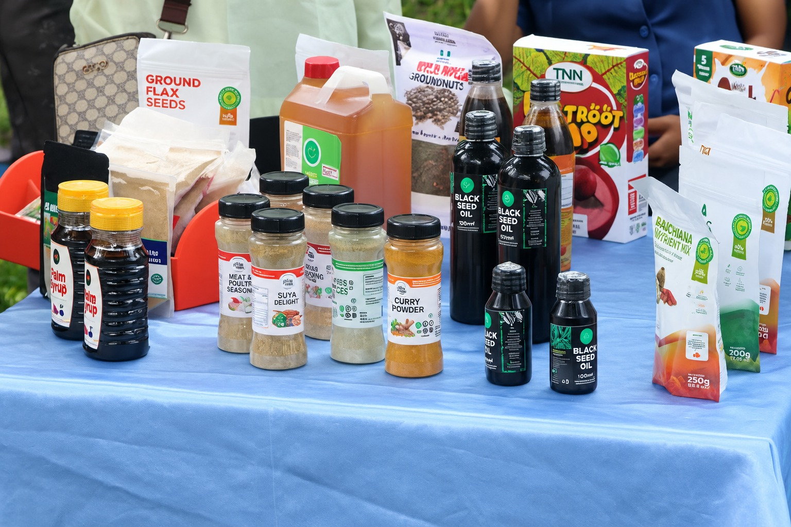

Revitalize Wellness and Holistic Garden introduced its Green Skills initiative during its fourth-anniversary celebration to promote urban gardening, healthy eating and household food production. The initiative encourages individuals to grow vegetables in available spaces, including backyards and planting bags, demonstrating that food cultivation does not require extensive farmland.
Green Skills also aims to educate communities on nutrition, sustainable gardening and value addition—transforming agricultural produce into useful products. By bringing together farmers, homemakers, nutritionists and entrepreneurs, the initiative seeks to connect food production with wellness, food security and economic opportunities.
The anniversary brought together healthcare professionals, women entrepreneurs, nutritionists, psychologists and other stakeholders to celebrate progress and explore opportunities for collaboration. The event also featured the promotion of urban gardening and the launch of the Green Skills initiative, reinforcing Revitalize’s commitment to sustainable living, nutrition education and food security.
Its message is simple: everyone can take practical steps towards healthier living and sustainable food production.